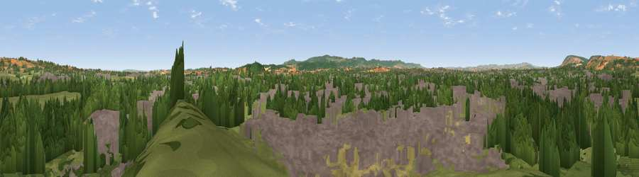

Viewpoint near Monkton Heathfield
#20560 in England · top 53% of its area beats it · near Monkton HeathfieldThe view, rendered

A 360° render of this exact spot computed from the terrain model, tree cover and land cover — summer colours, afternoon light, calibrated against photographs of famous viewpoints. Real trees, hedges and buildings will differ in detail.
The panorama
Grey silhouette: terrain skyline in each direction (720 bearings, Earth curvature and refraction included). Dashed green: skyline with trees (+15 m) and buildings (+8 m) as obstacles. Blue strip: how far the ground is visible on each bearing.
Where the view opens
Wedge length = distance to the farthest visible ground on that bearing (vegetation-aware). Rings at 10, 25 and 50 km.
What fills the view
38% woodland · 36% built-up · 20% grassland · 6% cropland
Angular shares of the visible panorama (visual magnitude), not map area. Landscape diversity 0.53 (0–1 Shannon).
Key numbers
More beautiful places nearby
The staircase of upgrades: each row has a higher view potential than everything closer. Driving times are estimates from straight-line distance, calibrated against real road routing — check an actual route before setting out.
| Place | Direction | Drive | Score |
|---|---|---|---|
| Viewpoint near Stoke St Mary | SE · 3 km | ~8 min | 66.3 |
| Kingston Beacon | NNW · 5 km | ~11 min | 74.0 |
| Viewpoint near Broomfield | N · 7 km | ~15 min | 76.0 |
| Viewpoint near Broomfield | NW · 9 km | ~17 min | 78.5 |
| Cothelstone Hill | NW · 9 km | ~18 min | 82.1 |
| Viewpoint near West Bagborough | NW · 11 km | ~21 min | 84.3 |
| Wills Neck | NW · 13 km | ~23 min | 85.7 |
| Viewpoint near Holford | NW · 18 km | ~32 min | 85.9 |
51.02413, -3.07610 · source: screening · position refined by local search. Computed location — check access rights before visiting.